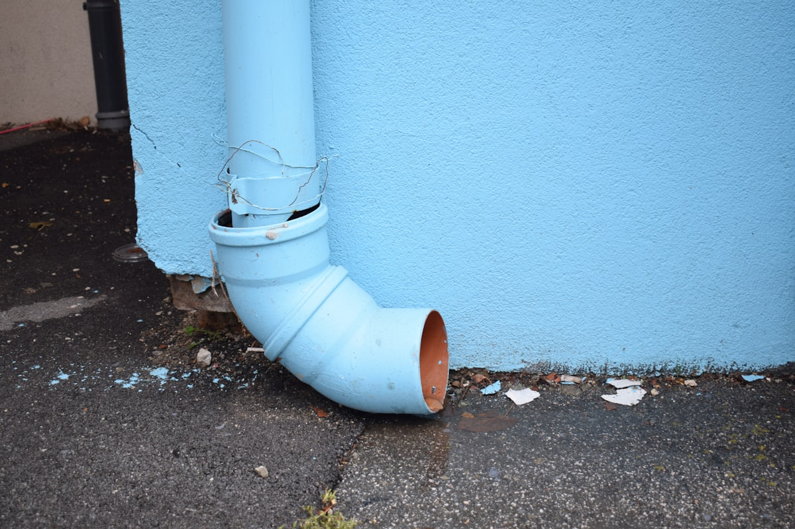

Water extraction is the most critical first step in any water damage restoration project. Structural materials, floors, possessions and building systems all take less damage when standing water comes out sooner. Left standing, water keeps moving deeper by the hour, wicking into drywall, soaking carpet pad, seeping under flooring and saturating the framing. For emergency water extraction in Oklahoma City, Oklahoma City Restoration brings truck-mounted units and portable extractors built to pull out hundreds of gallons every minute.
Few water removal systems match the power of a truck-mounted extractor, which draws water from structural materials, carpeting and hard flooring far better than rental or consumer machines. Confined spaces, wall cavities and the gaps between floor layers call for different gear, so we use portable extractors, specialty tools and submersible pumps in places the truck-mounted hoses cannot get to.
There is more to a professional extraction than getting rid of the water in plain sight. Using moisture detection equipment, our IICRC-certified team finds water that has moved out of sight, whether under cabinets, beneath flooring, behind baseboards or inside walls. The more moisture our specialty tools take from these concealed areas ahead of drying, the shorter and lighter the structural drying job becomes, and the lower the chance of secondary mold growth.

When to Call for Water Extraction in Oklahoma City
Catching these issues early helps you avoid costly problems and protect your property. Watch for these telltale signs that professional help is needed:
- Water seeping out from under baseboards or cabinets
- An appliance, HVAC unit or pipe that is leaking right now
- Seams in the floor that ooze water under foot pressure
- Water accumulating after a fire suppression system discharges
- A utility area, mechanical room or crawl space with water in it
- A basement taking on water after heavy rain or a sump pump failure
- Flooded window wells or stairwells letting water into the building
Don't Wait Until It's an Emergency
Many water damage problems start small but can escalate quickly into costly emergencies. If you notice any of these signs, contact Oklahoma City Restoration at (623) 352-0612 for a prompt evaluation.
Need Help With Water Extraction?
Get a free estimate from our expert team today.
Call (623) 352-0612 NowComparing DIY and Professional Water Extraction
While some minor restoration tasks can be handled by handy homeowners, most water damage work requires professional expertise, specialized equipment, and proper safety training. Consider the following comparison:
| Factor | DIY Approach | Professional Service |
|---|---|---|
| Hidden Moisture | Hidden wet areas go unnoticed | Moisture detection equipment locates hidden water |
| Equipment Cost | Rental fees add up quickly | Professional equipment included in service |
| Removal Rate | Just 1 to 2 gallons each minute | Truck-mount: hundreds of gallons per minute |
| The Next Step | No drying plan once water is gone | Seamless transition to professional drying |
| Thoroughness | Gets only what sits on top | Pulls water from subfloor, walls and padding |
Common Water Extraction Questions
Water Extraction, Step by Step
Our systematic approach delivers quality results on every project. Here's how we handle water extraction from start to finish:
Fast Arrival and Setup
Our extraction crew arrives quickly with truck-mounted and portable equipment ready for immediate deployment. We assess the situation and begin extraction shortly after arrival.
Standing Water Removal
Truck-mounted extractors remove large volumes of standing water from floors, carpets and surfaces. Submersible pumps handle deep water in basements and crawl spaces.
Deep Extraction from Materials
Wall cavities, carpet fibers, padding, upholstery and awkward corners are extracted using tools made for the purpose. Every bit removed by machine now shortens the drying time later.
Moving On to Drying
Once maximum extraction is achieved, we position commercial dehumidifiers and air movers for structural drying. Moisture readings establish baselines for monitoring drying progress.
Not Sure What You Need?
We provide honest advice and free estimates on all water extraction work.
Call (623) 352-0612 NowHow to Prevent Water Extraction Problems
A little prevention goes a long way in avoiding expensive restoration emergencies. Here are our expert recommendations:
- Leak-sensing shutoff valves can cut off the water on their own when something fails
- Raise anything you store in the basement a few inches above the floor
- Add our number, (623) 352-0612, to your cell so help is one tap away in a water emergency
- Early leak signs show up near appliances, toilets and sink cabinets, so check those spots on a schedule
- Know where your main water shutoff valve is and label it clearly
- Store a bucket and spare towels where you can grab them, along with the number for a restoration company
Why Hire a Professional for Water Extraction?
How fast and how completely water is extracted decides how much of your property is damaged and what restoration will cost. Professional truck-mounted extraction equipment removes water hundreds of times faster than consumer tools, so what might take you an entire day with a shop vacuum takes our equipment minutes. This speed difference is not just about convenience, it is about preventing thousands of dollars in additional damage that occurs with every hour water stays in contact with building materials.
Our extraction also goes after moisture that home equipment can neither find nor get to. Through capillary action and wicking, water moves up drywall, into the pad under carpet, between layers of flooring and along plumbing lines and electrical conduit. Surface extraction by itself leaves much of this behind, so our team uses specialty techniques and tools aimed at the hidden moisture. Being this thorough shortens drying, cuts equipment costs and, above all, helps stop trapped moisture from turning into hidden mold.
Schedule Your Water Extraction Service
Don't let water damage problems get worse. Call Oklahoma City Restoration now for prompt, professional service.
Call (623) 352-0612 Now